Social strategy · community growth
Paid social · AV direction · 4 editions
Full-cycle social media management across 4 editions of one of Europe's most respected documentary film festivals. Strategy, content creation, paid social, and AV coordination — from editorial planning to real-time festival coverage. 3-month campaign, €300 budget, 1.8M+ views.
Doclisboa — International Film Festival is one of Europe's most respected documentary and auteur film festivals, held annually in October across multiple venues in Lisbon. With a consolidated international profile, the festival has a natural extension on Letterboxd — a platform rarely explored by Portuguese festivals.
Between 2022 and 2025, I was responsible for the festival's digital and physical communication throughout the year — content planning and creation, publishing and monitoring across all platforms, newsletter (MailChimp) and website (WordPress) management, press release planning in coordination with the festival's press office, and coordination of photographic and audiovisual coverage. In 2025, I took on the additional role of managing a paid social campaign on Meta Suite, with a €300 budget, over 2.5 months.
In 2022, when I joined Doclisboa as Communications Assistant, the Instagram account had 10,000 followers and a fragmented digital presence. Communication was heavily concentrated in the 2 months surrounding the festival, with minimal activity throughout the rest of the year and no consistent editorial strategy across platforms.
Over the following three editions, I helped revamp the festival's digital presence — establishing a consistent visual and editorial identity throughout the year, and treating each platform with its own language: Instagram as a visual and community channel, LinkedIn as an institutional channel, Facebook for reach, and Letterboxd as a natural extension for a film festival with a cinephile audience.
"Sustainable growth doesn't happen only during the festival month — it happens through 12 months of consistent, relevant content for the community."
In 2025, in the role of Digital Communications & Social Media Manager, the strategy included a deliberate paid social component: boost only the organic content already performing well, during the festival's peak weeks — with no exclusive ad creatives. The result was 1.8M+ views in 2.5 months, at a cost that proves the principle: paid amplification works best when the organic foundation is already validated.
Management was full-cycle: monthly content planning over a three-month campaign, content creation (copy, design, photo, and video), scheduling via Meta Suite, and weekly performance monitoring via Meta Insights. During the festival, real-time coverage included daily posts and stories, community management — responding to comments, DMs and interactions — and coordination of photo and video teams.
Content was organised by category, each with its own editorial logic and visual language:
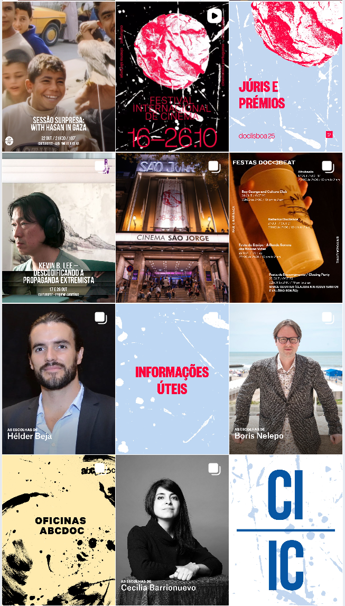
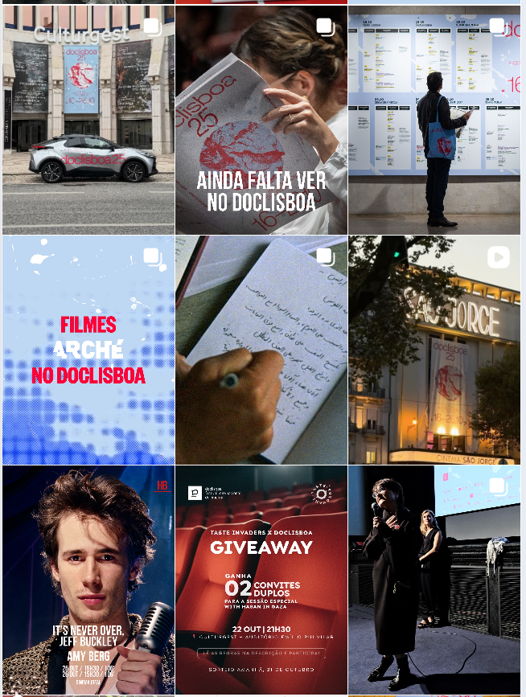
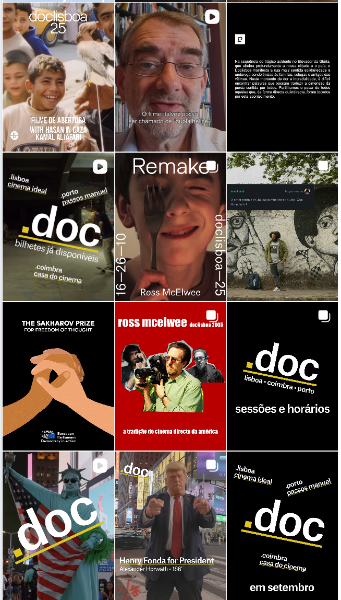
Os posts foram organizados por tipologia de conteúdo — cada categoria com linguagem visual e editorial própria, garantindo variedade sem perder coerência de marca.
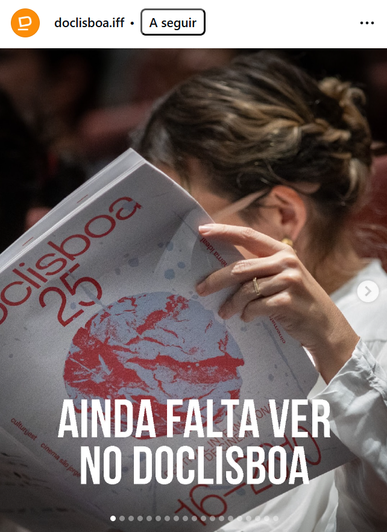
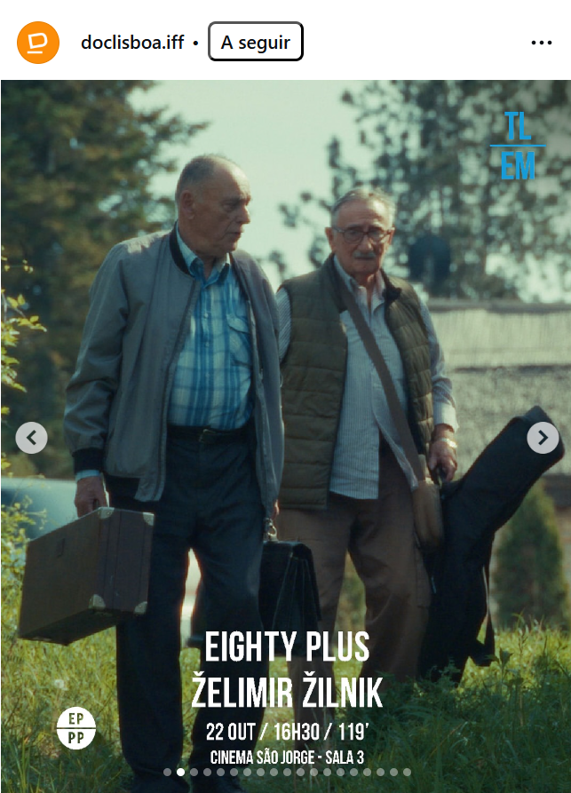
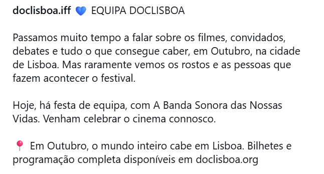
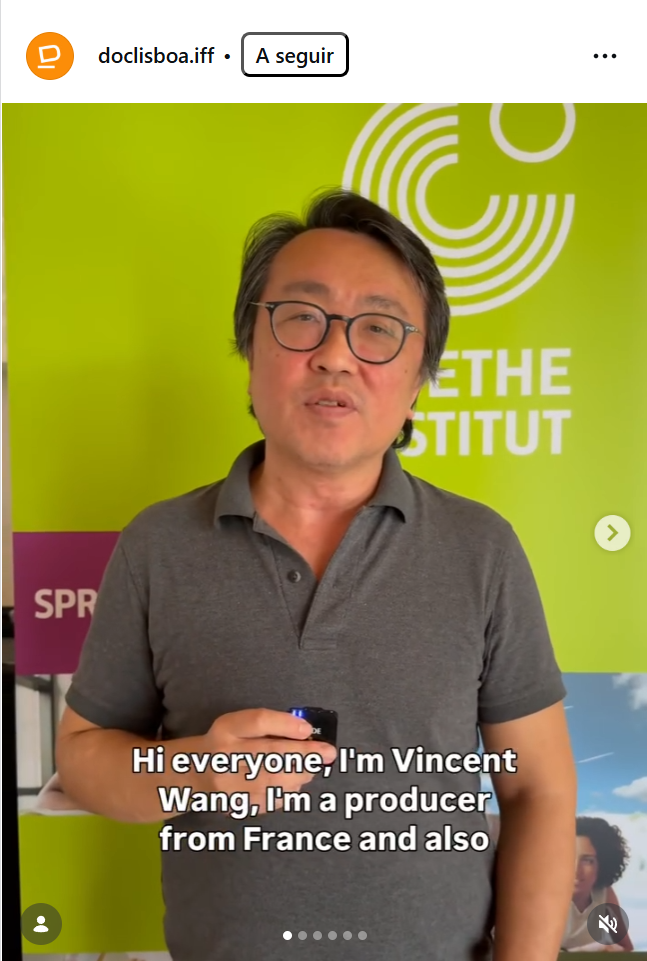
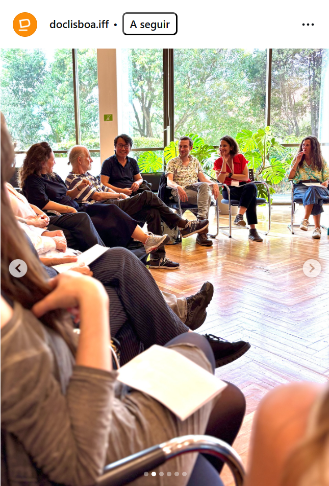
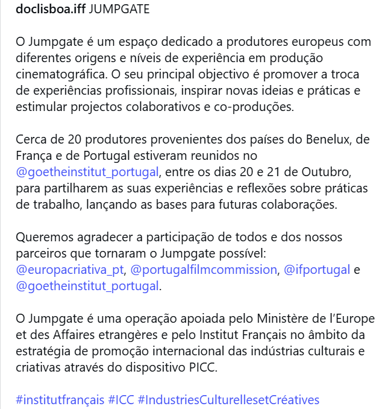
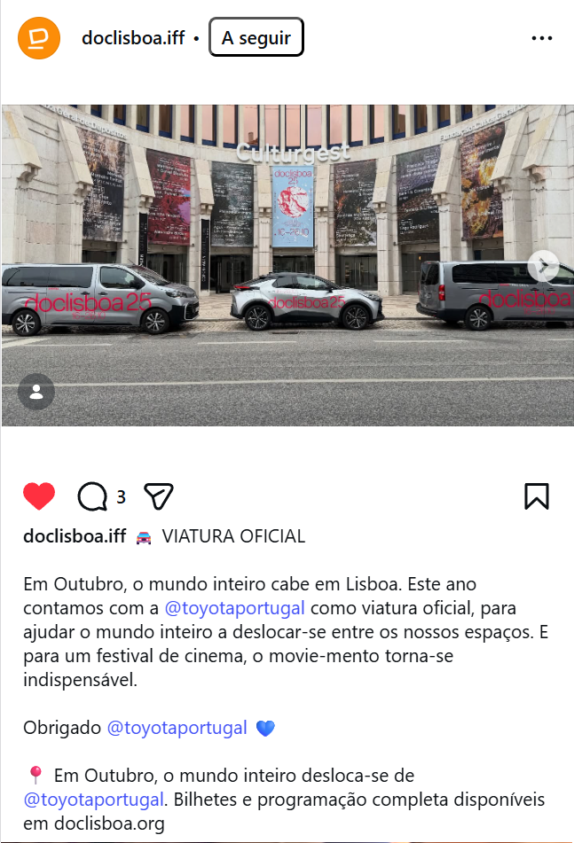
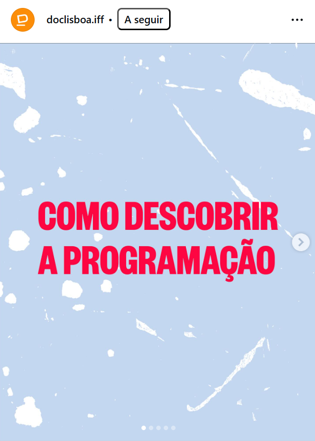
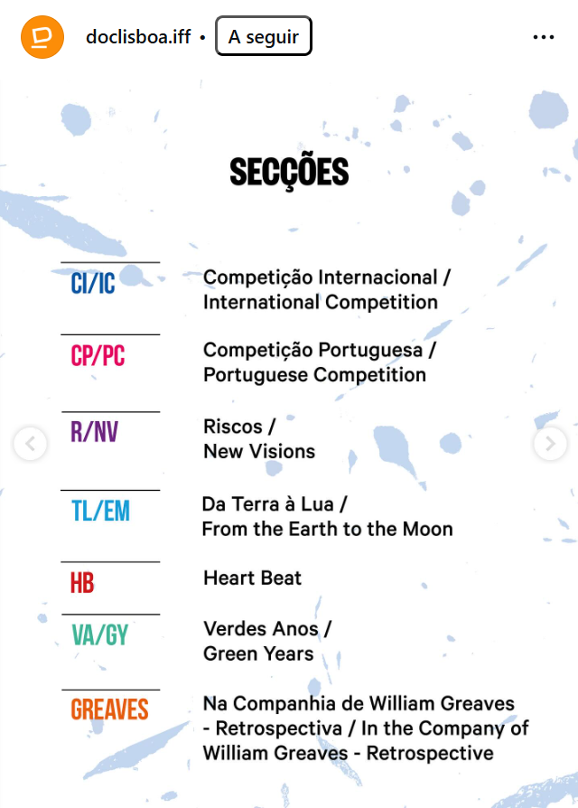
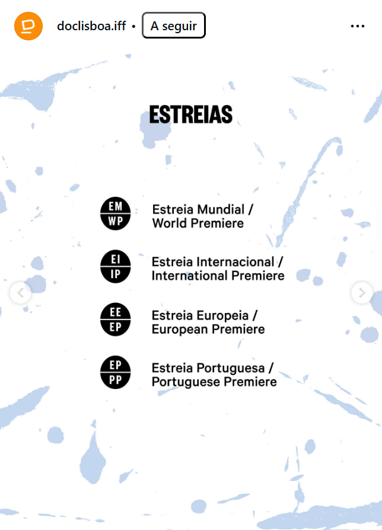
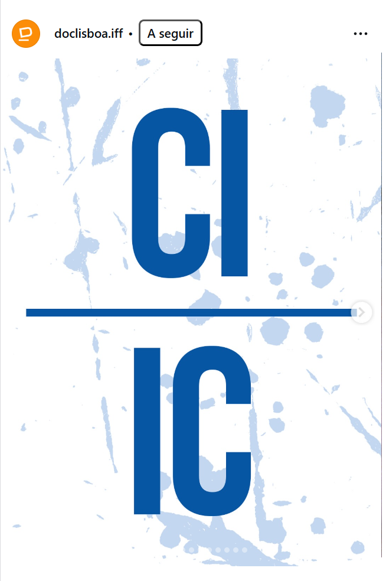
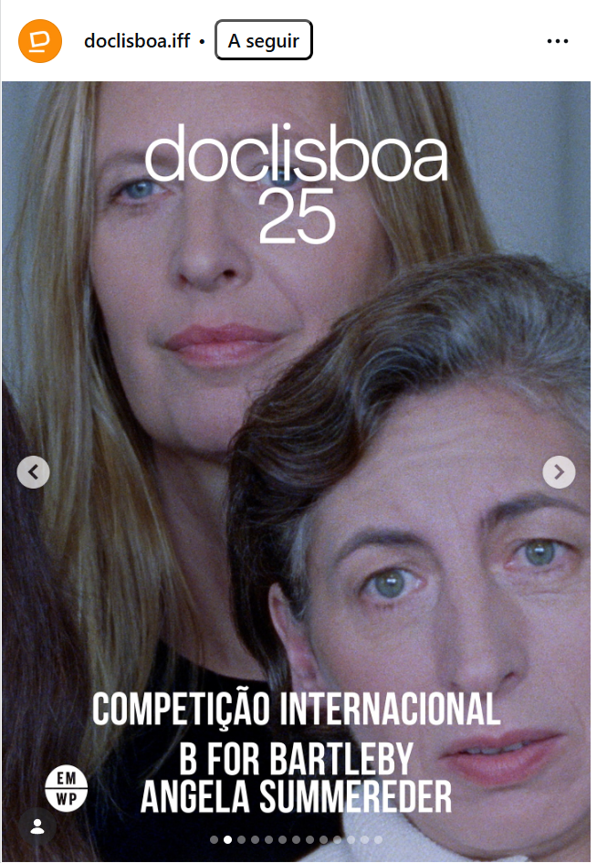
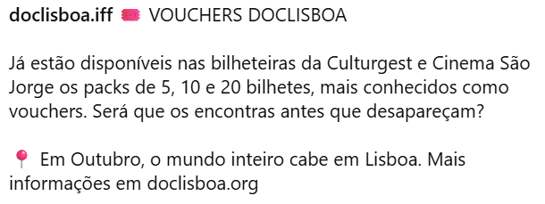
Strategy, editorial planning, copy, design direction, and publication were my direct responsibility across all platforms. AV coverage was coordinated by me — including briefings, session mapping, and partner visibility protocols — and executed with a dedicated photo/video team during the festival.
Over 4 editions, the Instagram account grew from 10,000 to 19,800 followers — a 98% growth. In the 2025 edition, the 2.5-month campaign generated over 1.8 million views on Instagram, 80% organic, with a paid ads budget of just €300.
The main insight: editorial consistency throughout the year outperforms short-term intensity. The most significant follower growth happened in years when the digital presence was most active outside the festival window — specifically in 2024 and 2025. Behind-the-scenes and what-is-the-festival content, early programme reveals with mentions to all of the directors, and recovering the archive of the festival were the type of content that kept the community engaged year-round and primed for the campaign launch in September.
"With €300 and strong organic content, we generated 1.8M views. What scaled wasn't the money — it was the relevance of the content."
The integration of paid social in 2025 confirmed a clear principle: paid amplification works best when the organic foundation is already strong. Ads were applied exclusively to posts that had already demonstrated engagement organically. The selection criteria were simple: reach-to-engagement ratio and alignment with the campaign's awareness objective for that week.